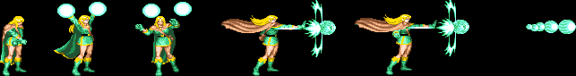
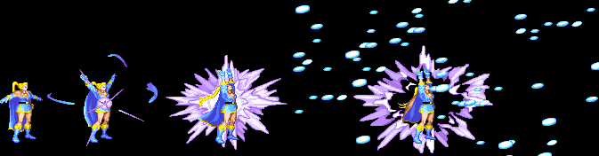
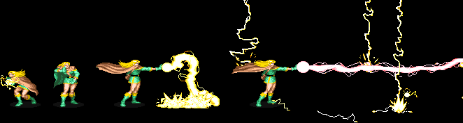
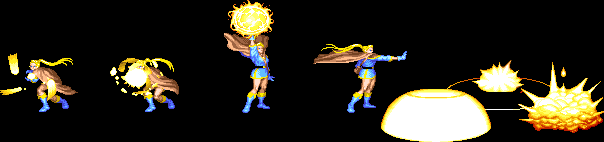
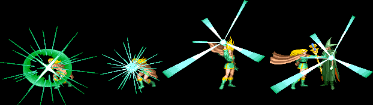
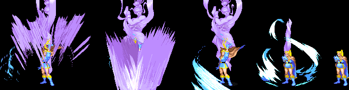
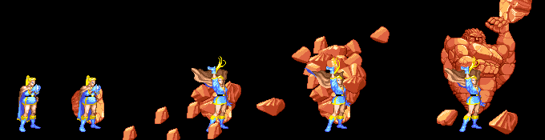
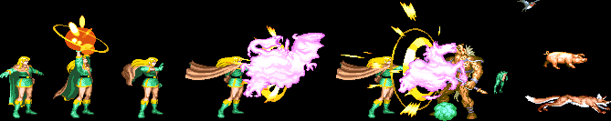
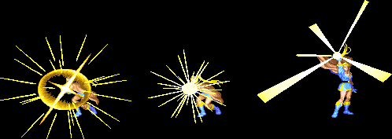

|
|
|
ELF |
 |
| |
|
|
| |
※ 데미지는 1인용을 기준으로 합니다.
muser/img/m_mm.gif) Magic Missile (MM) - 1레벨 주문 Magic Missile (MM) - 1레벨 주문
기본적인 성능은 매직 유저와 같지만 레벨이 낮아서 발사가능한 갯수가 적고 데미지도 낮기 때문에
효율이 떨어지는 편이며 와이번을 탄 셰도우 엘프를 견제하거나 가고일을 잡을 때 쓸만 합니다.
이어링(earring)의 영향을 받습니다.
데미지 (단위 : 픽셀) - 약간 랜덤성이 있습니다.
| 레벨 |
8 |
9 |
10 |
| 일반 몬스터 |
16 |
16 |
18 |
| 보스 |
12 |
14 |
14 |
미사일의
갯수 |
2 |
2 |
3 |
|
|
|  |
| |
muser/img/m_is.gif) Ice Storm (IS) - 4레벨 주문 Ice Storm (IS) - 4레벨 주문
기본적인 성능은 역시 매직유저와 같으며 데미지가 상대적으로 낮고 시전횟수가 적다는게 흠이지만 대신
매직유저보다 일반 공격 속도가 빠르기 때문에 시전 후 콤보를 넣기에 더 유용하므로 활용성은 좋습니다.
8~9레벨에 시전시 매직유저보다 시전시간이 짧지만 10레벨이 되면 거의 동일 해 집니다.
(8~9레벨 : 약 3초, 10레벨 : 약 4초)
이어링(earring), 콜드 로드(rod of cold)의 영향을 받습니다.
데미지 (단위 : 픽셀)
| 레벨 |
8 |
9 |
10 |
| 일반 몬스터 |
24 |
24 |
30 |
| 보스 |
24 |
24 |
30 |
※ 플레임 샐러맨더에게 증가된 데미지를 줍니다(30 → 45).
|
|
|  |
| |
muser/img/m_lb.gif) Lightning Bolt (LB) - 3레벨 주문 Lightning Bolt (LB) - 3레벨 주문
매직유저와는 달리 워머신과 에저홀덴, 그리고 사라만다에게 2히트가 이루어집니다.
그리고 8~9레벨에 시전시 시전시간이 매직유저보다 짧지만 10레벨에 시전시 오히려 길어집니다.
(8~9레벨 : 약 3초, 10레벨 : 약 5초)
레드 드래곤, synn에게 라이트닝 크리티컬 성공시 가장 데미지가 높은데 (유일하게 레드 드래곤을 이어링이나
라이트닝 로드 하나만으로 한번에 끝내는게 가능) 이는 엘프만의 '특혜'라고 할 수 있겠습니다.
(드워프의 경우 레벨이 낮다는 이유로 이어링과 라이트닝 로드가 둘 다 있어도 한번에 끝낼 수 없습니다.)
이어링(earring), 라이트닝 로드(rod of lightning)의 영향을 받습니다.
데미지 (단위 : 픽셀) - 약간 랜덤성이 있습니다.
| 레벨 |
8 |
9 |
10 |
| 일반 몬스터 |
28 |
28 |
34 |
| 보스 |
26 |
26 |
30 |
|
|
|  |
| |
muser/img/m_fb.gif) Fire Ball (FB) - 3레벨 주문 Fire Ball (FB) - 3레벨 주문
기본적인 성능은 매직 유저와 같으며 역시 데미지가 낮아서 라이트닝 볼트에 밀려 거의 쓰이지 않습니다.
타임어택시 몰려있는 고블린을 몰살시킬 때 가끔 씁니다.
이어링(earring), 파이어 로드(rod of fire)의 영향을 받습니다.
데미지 (단위 : 픽셀) - 약간 랜덤성이 있습니다.
| 레벨 |
8 |
9 |
10 |
| 일반 몬스터 |
20 |
24 |
24 |
| 보스 |
18 |
20 |
20 |
|
|
|  |
| |
Invisibility (I) - 2레벨 주문
시전자 혹은 목표물(게임상에선 파티원)을 시야에서 사라지게 만드는 주문입니다.
원래는 소리까지 지우지는 못해서 적들이 발자국 소리를 듣고 위치를 눈치 챌 수도 있지만
이곳 게임상에선 특별히 그런것은 없으며 몇몇 보스들에게는 이 주문이 소용이 없습니다.
시전 후 1~2초간은 적들이 위치를 파악하고 공격 해오는 경우가 있으니 방심하지 않는게 좋습니다.
공격, 아이템 사용, 주문 시전시 효과가 풀리며 헤이스트, 블레스의 효과와 중첩되지 않습니다.
지속 시간이 길기 때문에 적들을 피하고자 할 때 쓸만 합니다(대쉬를 통해 부딛혔을 때에도 효과가 풀리니 주의).
이 마법은 시전이 된이후로 공격이 들어가면 타격수만큼 시간을 보상받습니다. 다만, 일반공격을 하면 풀리기때문에
백점프공격으로 해야되지만, 그렇게까지 쓸일은 없습니다.
지속 시간(단위:초) 30
※ 다른 파티원이 저주의 검을 휘둘러서 데미지를 입기 직전에 걸어주면 모션을 캔슬시켜 데미지를 무효화 할 수 있으며
또한 넘어지는 아군이 땅에 한번 튕길 시점에 걸어주면 넘어지는 모션도 캔슬시킬수 있습니다.
|
|
|  |
| |
Conjure Elemental (CE) - 5레벨 주문
10레벨이 되면 사용 가능한 주문으로 시전시간이 매직유저에 비해 상당히 깁니다.
(바람의 정령 : 약 7초, 땅의 정령 : 약 8초, 매직 유저의 시전시간은 약 4초)
매직유저처럼 보는 방향에 따라 소환하는 정령이 달라지는데 왼쪽을 보고 있을 경우 바람의 정령을 소환하고
오른쪽을 보고 있을 경우 땅의 정령을 소환합니다. 땅의 정령을 소환시 지면에 붙어 있는 적에게만 데미지를
줄 수 있으며 바람의 정령은 화면상에 존재하는 모든 적에게 데미지를 주지만 리치나 드래곤, 에저홀덴 같은
공중에 떠 있는 적을 제외하면 사방팔방으로 흩어지면서 구석으로 처박히는게 흠입니다.
시전 가능한 횟수가 너무 적다는 것 또한 흠이라면 흠. 이어링(earring)의 영향을 받습니다.
데미지 (단위 : 픽셀) 32
|
|

 |
| |
Polymorph Other (PO) - 4레벨 주문
목표물 하나를 무해한 동물로 바꾸는 주문입니다. HP에 상관없이 한번에 처리 할 수 있다는 장점이 있긴 하지만
이렇게 처리된 적은 아이템을 떨구지 않으며 딱 한명에게만 적용되기 때문에 아이스 스톰에 밀려 별로 쓰진 않습니다.
예외적으로 가고일은 동물로 변하지 않고 즉사하며 아이템을 떨굽니다.
목표물에 가깝게 접근해서 시전해야 하며 누워있는 몬스터에게는 영향을 줄 수 없습니다.
또한 보스에게는 아무런 영향을 줄 수 없습니다.
|
|
|  |
| |
Haste (H) - 3레벨 주문
시전자 혹은 목표물의 모든 행동을 빠르게 하는 주문으로 게임상에선 클레릭의 블레스처럼 시전시 자신과 모든
파티원에게 효과가 적용되며 아이템 투척속도와 주문 시전을 제외한 모든 행동이 빨라집니다.
(아이템 중에선 예외적으로 엘프의 화살 발사속도, 공중 은화살 발사속도와 시프의 슬링 투척속도도 빨라집니다.)
보스를 빠르게 공략하거나 스테이지를 빠르게 이동하거나 할 때 효과가 좋지만 행동이 너무 빨라져서
숙련되지 않았다면 컨트롤 하기가 힘든 면이 있으며 특히 2인 이상 플레이시 호흡이 잘 안맞는 상태에서
시전했다면 안쓰니만 못한 상황을 연출 할 수도 있습니다.
그리고 에뮬레이터의 연사기능을 사용하지 않는다면 평타 공격시 D키 공격이 자주 나갈 수 있습니다.
앉았다 일어나거나 마법창과 아이템창을 교환하거나 할 때 백스텝이 발동하는 경우가 많은데
평소보다 B버튼을 약간 더 길게 누르면 백스텝이 발동하는 걸 막을 수 있습니다.
시전된 상태에서 공격이 들어가면 들어간만큼 시간을 보상받습니다. 즉, 공격되는 찰나의 시간은 마법 지속시간에
포함되지 않는 공식이 성립됩니다. 레드드래곤에서 사용하면, 최대 2배까지 효과를 볼 수 있습니다.(20초)
인비지빌리티, 블레스의 효과와 중첩 되지 않습니다.
지속 시간(단위:레벨/초) 8/8 9/9 10/10
|
|
|  |
| |
| go to Top |
| 2007 Crassus & legon. All rights reserved. |